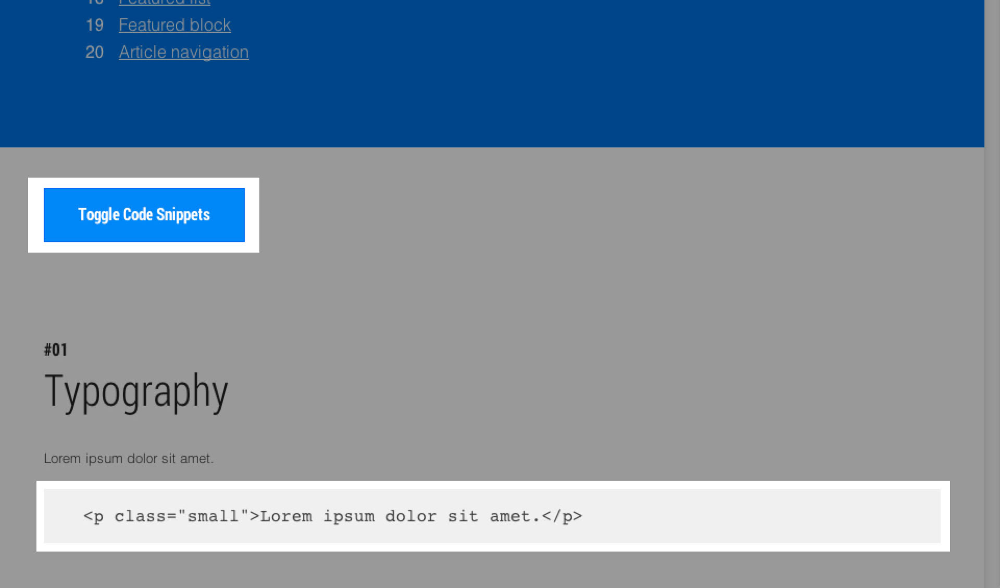
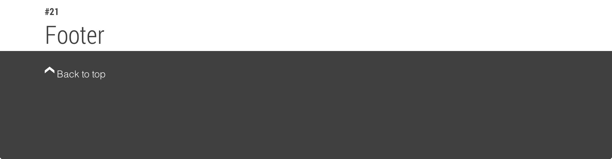

View the Style Guide HTML
To see the HTML and class names needed to add an element into your page, click
the ‘Toggle Code Snippets’ button at the top of the style guide. Once enabled
you’ll see a code example below each element with the appropriate markup which
you can copy, paste into your pages.

Extend the Style Guide
Whenever you create a new element which will appear in various places on your
site, consider adding the element to your style guide.
Add a New Component
-
Open app/styleguide.html and after the last element, add the HTML
for your new element.
-
Inside app/styles/components/, create a new Sass file with an appropriate
name for your component.
-
Open app/styles/components.scss and at the bottom of the file, import your
new Sass file like so.
// New Styles
@import "_components/_<My Component Name>";
Don’t forget to include the underscore in the filename; it indicates that
the file is designed to be merged into other Sass files.
-
Test out how it looks on localhost by going to http://localhost:/styleguide.html and make sure the build was successful.
-
Finally, use your new component in your pages.
Example of How to Add a Component
Below is a simple step through of adding a component to the Style Guide.
-
First we add our <footer> tag at the bottom of app/styleguide.html
and give it a class name Footer.
-
Then we create our sass file. Here we’ll create
app/styles/components/_footer.scss and add some really basic styles to get
us started.
.Footer {
height: 180px;
background-color: #404040;
}
-
At the bottom of components.scss, we add our footer sass file.
// New Styles
@import "_components/_footer";
-
By this point, running gulp serve and checking out the style guide, we
should be able to see the footer in all it’s glory.
-
Add a little more to our styles:
.Footer {
height: 180px;
color: white;
background-color: #404040;
a {
text-decoration: none;
color: white;
}
}
-
Let’s add a title in styleguide.html so it looks like the other style guide
elements and perhaps a link at the top of the page.
// Footer Link at top of styleguide.html
<li class="summary-header__anchors-item">
<a href="#footer">Footer</a>
</li>
.......
// Footer Title
<div class="container">
<a name="footer"></a>
<h2 class="subsection-title">
<strong class="subsection-number">#21</strong> Footer
</h2>
</div>
<!-- Input Component HTML Here -->
</div>
-
Finally, flesh out our HTML a bit
<footer class="Footer">
<div class="container">
<p>
<a href="#">
<i class="icon icon-chevron-up"></i> Back to top
</a>
</p>
</div>
</footer>
-
Done :)

You can now use the footer component in any page which includes the
components.scss file inside it (like the app/styles/main.scss file).
/*
* Visual Style Guide styles
* Remove if you prefer to use a CSS library, like Bootstrap
*/
@import "components/components";